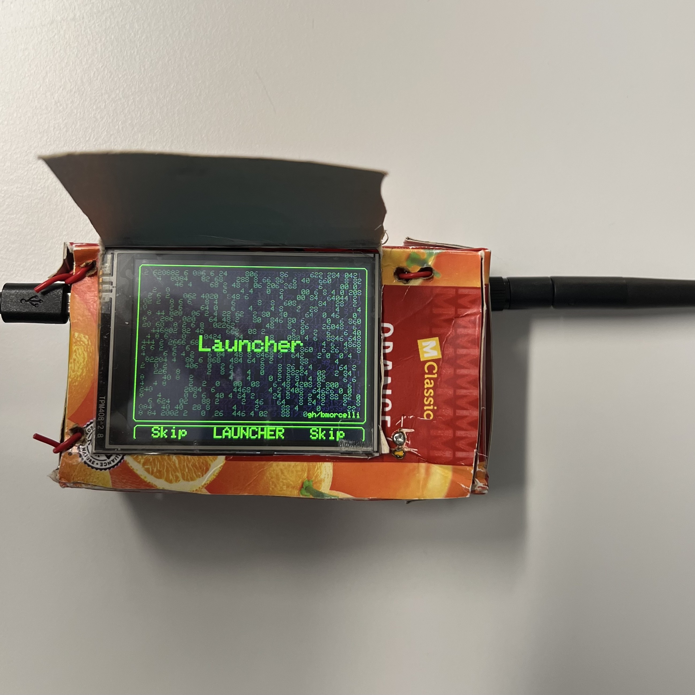
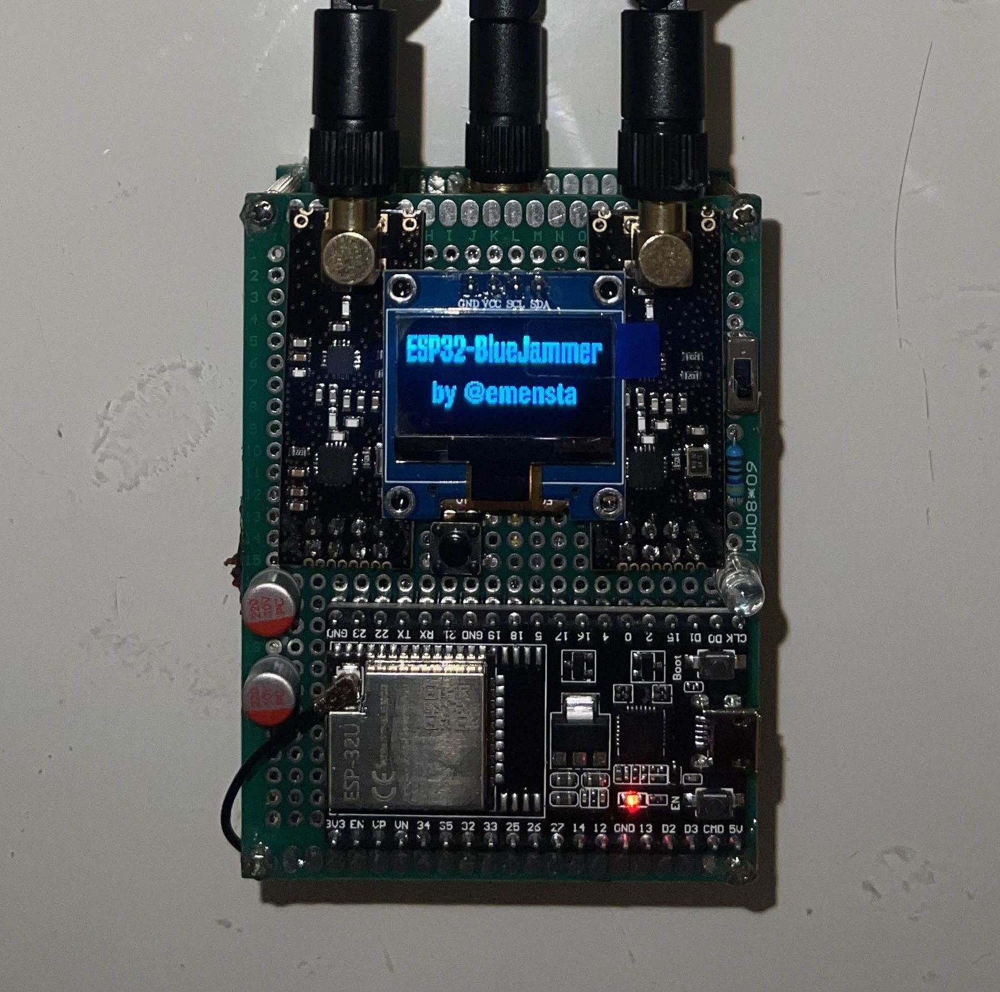
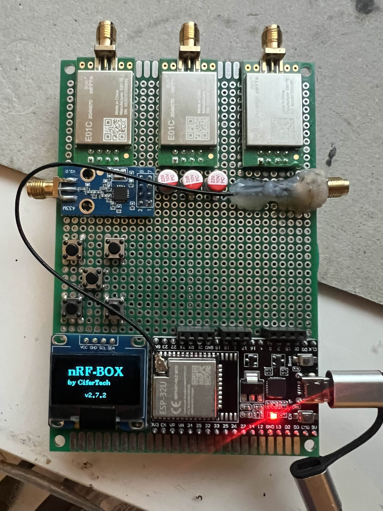
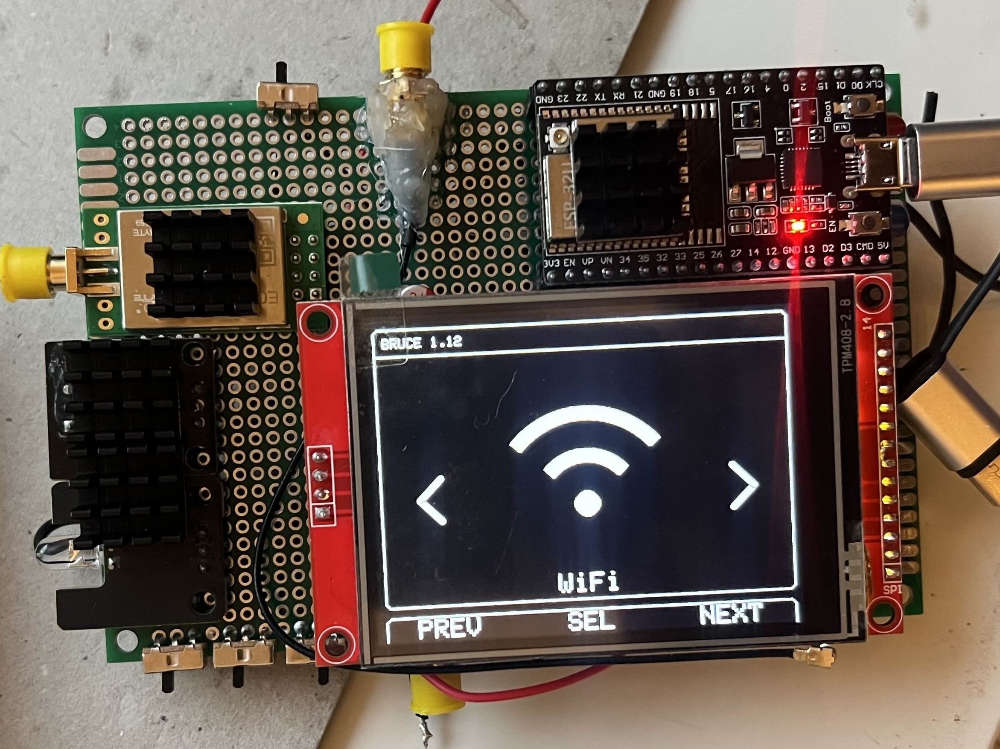
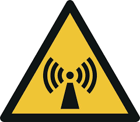
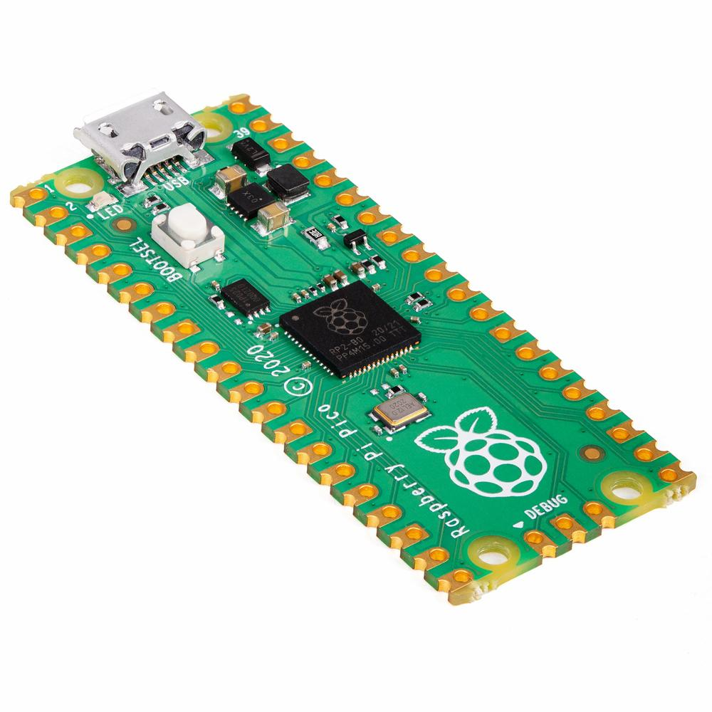
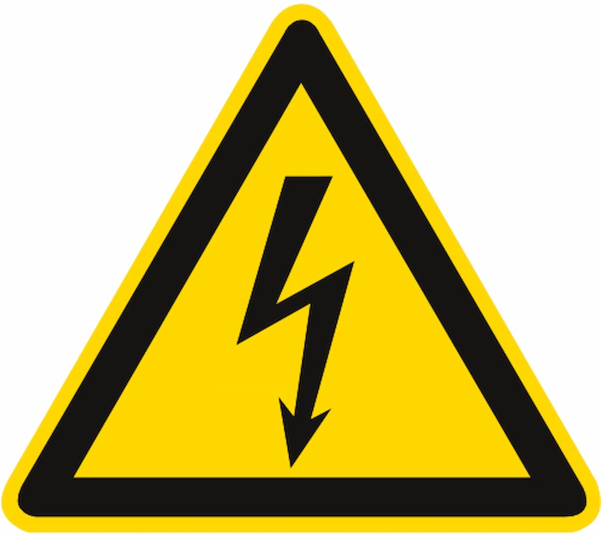
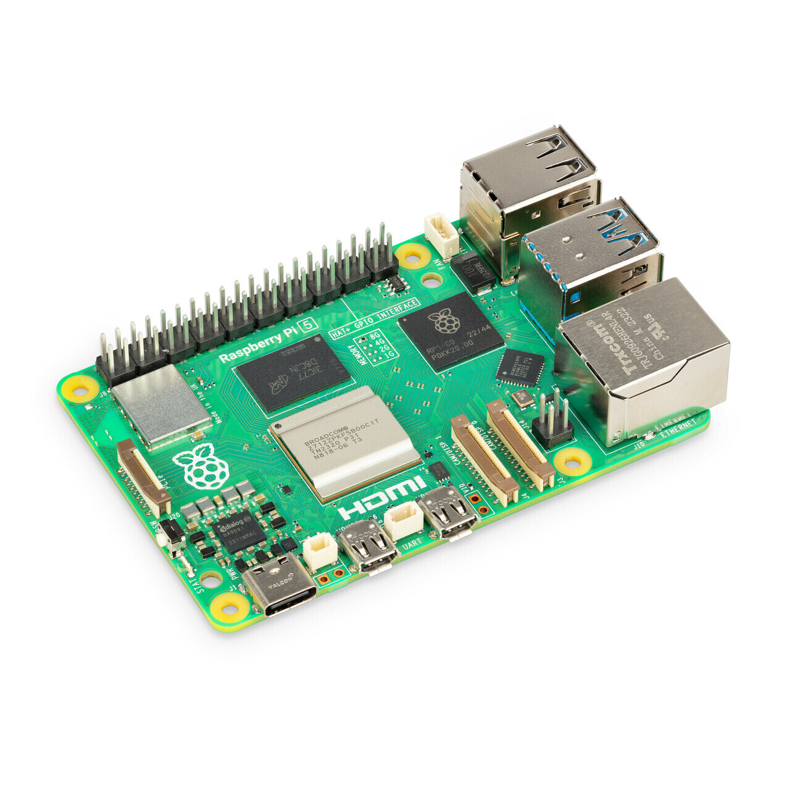

Projekte
Hier findest du eine Auswahl aktueller und vergangener Arbeiten von anderen die ich nachgebaut habe.

ESP32 Marauder -
JustCallMeKoko
Ein Open-Source Tool für das ESP32-Board mit Netzwerk-Scan, Packet-Monitor und
Protokollanalyse von JustCallMeKoko.

ESP32 Blue Jammer - Emensta
Ein Bluetooth-Analyse-Projekt zur Untersuchung von Reichweite und Verbindung – zu
Lernzwecken von Emensta.

WiFiX-DualBand-Deauther - Emensta & ASP-29
Ein leistungsstarkes Werkzeug, mit dem Sie Deauthentifizierungsangriffe auf sowohl 2,4-GHz- als auch 5,8-GHz-WiFi-Bänder durchführen können. Von Emensta & ASP-29

NRF Box - CiferTech
Die nRF-Box von CiferTech ist ein kompaktes Open-Source-Wireless-Toolkit zur Analyse des 2,4-GHz-Funkbands. Auf Basis eines ESP32 und mehrerer NRF24-Module ermöglicht sie das Scannen und Untersuchen von Wi-Fi-, Bluetooth/BLE- und anderen 2,4-GHz-Signalen, inklusive Emulation und Forschungsfunktionen für Protokoll- und Security-Analysen. Sie richtet sich an Entwickler und Security-Forscher und ist für legale, autorisierte Test- und Lernzwecke konzipiert.

Bruce Project - Pr3y
Das Bruce Project von PR3Y ist ein kompaktes Security- und Funk-Research-Tool mit IR, RF-Cloning und -Emulation, CC1101, NRF24, WiFi/Bluetooth, NFC-Scan und GPS. Es dient der Analyse und Emulation drahtloser Systeme und ist für legale, autorisierte Test- und Lernzwecke ausgelegt.

EMP Jammer DIY
Kommt Bald Stört Bildschirm mit Strom und Kupferdraht

Bad USB DIY
Kommt Bald Ein USB mit Raspberry Pi Pico

USB-Killer DIY
Kommt Bald Ein USB frittiert alle Geräten mit USB-A anschluss (Stromschlag)

CyberDeck DIY
Kommt Bald Eigene Laptop mit Raspberry Pi 5
HomeLab DIY
Kommt Bald HomeLab mit Raspberry PI 5

Kommt Weitere
Kommt Bald